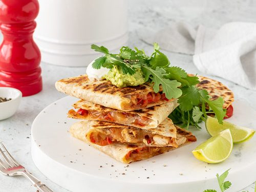

QUESADILLAS

DESCRIPTION
This is a recipie for quesadillas
INGRDIANTS
- 10 (6 inch) corn tortillas
- 2 cups shredded mozzarella cheese
- 1 (2 ounce) can sliced black olives
- 2 avocados - peeled, pitted and sliced
- 2 teaspoons hot pepper sauce
STEPS
- Heat a large frying pan or griddle over a medium heat
- Place one tortilla flat on the frying pan. After 1 minute flip the tortilla over.
- Sprinkle a little more than 1/4 cup cheese on the tortilla, followed by some olives, avocado, and hot pepper sauce.
- Place another tortilla on top to make a sandwich
- Cover the quesadilla with a lid. After one minute, flip the quesadilla. When the cheese has melted on the inside, remove the quesadilla